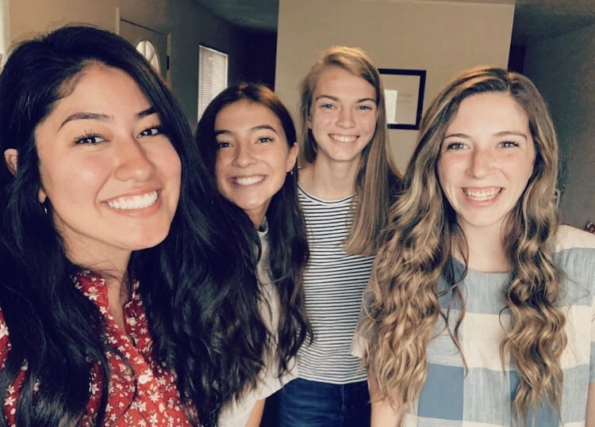

We are the relief society located in the 96th Young Single Adult ward here at Brigham Young University. This website can be used as a way to see who all is in the Relief Society as well as for viewing ministering assignments. For now, this website is primarily for members of the Presidency, but will hopefully be available to all memebrs as soon as Adri learns more about JavaScript.
